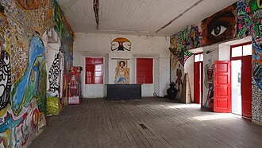

Restaurantes, bares e discotecas em Luanda
23 restaurantes, bares e discotecas em Luanda.
Na página de cada lugar: horário, preço em Kwanza (quando conhecido), como chegar, as fontes e a data de verificação. Horários e preços mudam: confirme antes de ir.
Restaurantes
-
Café del Mar
Restaurante de praia na Ilha, com vista para o pôr do sol.
-
O Madeirense
Espetadas de carne grelhadas na brasa.
-
Lookal Mar
Marisco fresco e cerveja Cuca à pressão.
-
Miami Beach
Peixe e marisco à beira-mar, todos os dias.
-
Otto Luanda
Cozinha italiana de autor na Ilha do Cabo.
-
Barbarico
Cozinha portuguesa no Maculusso, todos os dias.
-
Restaurante DUO (Miralua Club)
Cozinha de fusão no Miralua Club, em Talatona.
-
O Almeida
Grelhados, marisco e pratos angolanos na Via Expressa.
-
Restaurante Tia Maria
Cozinha portuguesa e funge junto ao Estádio dos Coqueiros.
-
PontoVIP
Petiscos e refeições, com mufete de carapau, em Talatona.
-
Seven Restaurante
Cozinha portuguesa e pratos angolanos por encomenda em Alvalade.
Bares
-

-
Infinitus Gastrobar
Petiscos e cocktails na Ilha.
-
Kilambar
Aberto todos os dias até às 2h00.
-
Plano B
Aberto todos os dias até às 23h00.
-
Bar da Amizade
Bar com petiscos e pratos angolanos em Futungo de Belas.

Discotecas
-
Chill Out
Pista de dança ampla com vista sobre a água.
-
Luxxe Luanda
Rooftop em Talatona, aberto até às 4h00 ao fim de semana.
-
Clube S
Concertos e festas junto ao embarcadouro do Mussulo.
-
Palmeiras Club
Festas e galas à noite, na Prenda.
-
Bessangana
Festas com DJ e semba na Ilha de Luanda.
-
Floresta da Ilha
Festivais de música eletrónica ao ar livre.
-
Karma (Talatona)
Sessões de DJ ao pôr do sol, em Talatona.
Mais guias
- Agenda de eventos
- Câmbio do dia
- Como viajar entre cidades
- O que fazer em Luanda
- Centros comerciais em Luanda
- Desporto e ginásios em Luanda
- O que fazer em Benguela e no Lobito
- O que fazer no Lubango e na Huíla
- O que fazer no Huambo
- O que fazer em Cabinda
- O que fazer no Namibe (Moçâmedes)
- O que fazer em Malanje
- Praias de Angola
- Parques nacionais de Angola
- Natureza e paisagens de Angola
- Museus de Angola
- Hotéis e alojamento em Angola
- Transportes em Angola: aeroportos, comboios e autocarros
- Casas de câmbio em Angola
- Hospitais e clínicas em Angola
Restaurants, bars and clubs in Luanda
23 restaurants, bars and clubs in Luanda. Each place page has opening hours, prices in Kwanza and directions. The Tuende app is available in Portuguese, English, French and Spanish.